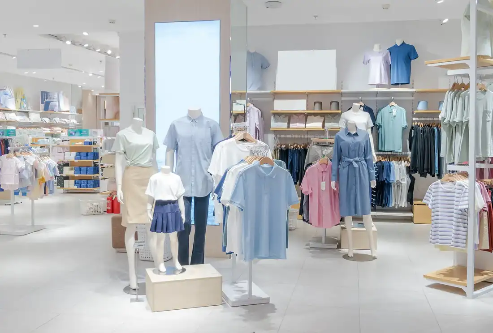
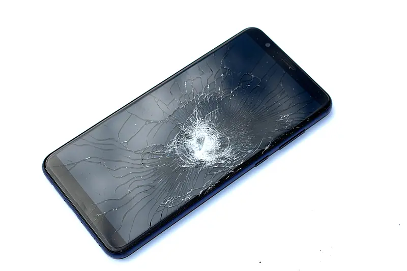
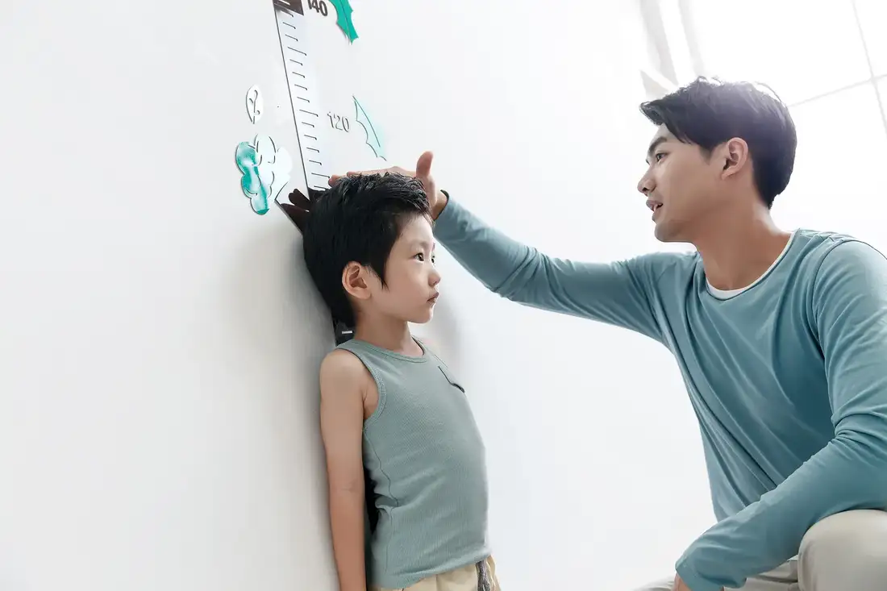
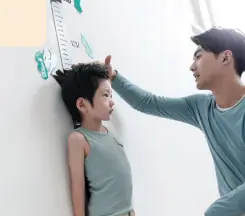
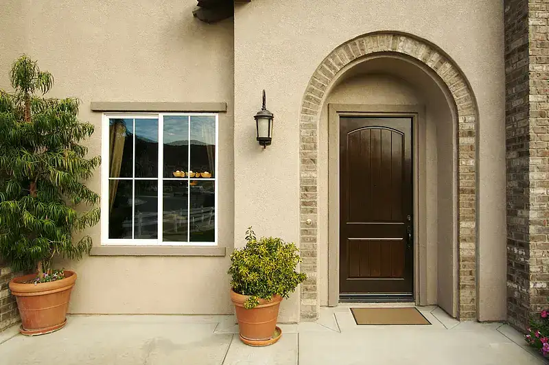
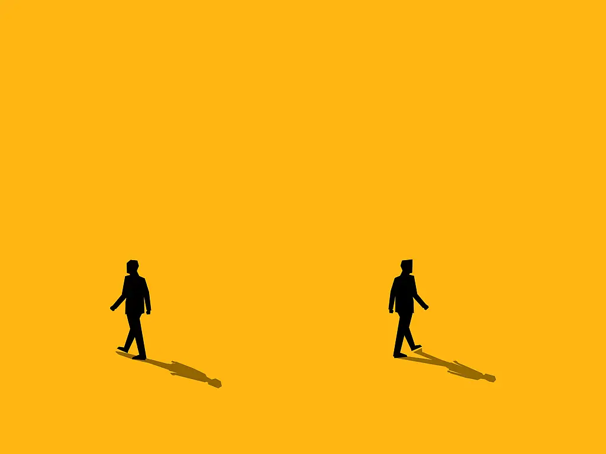
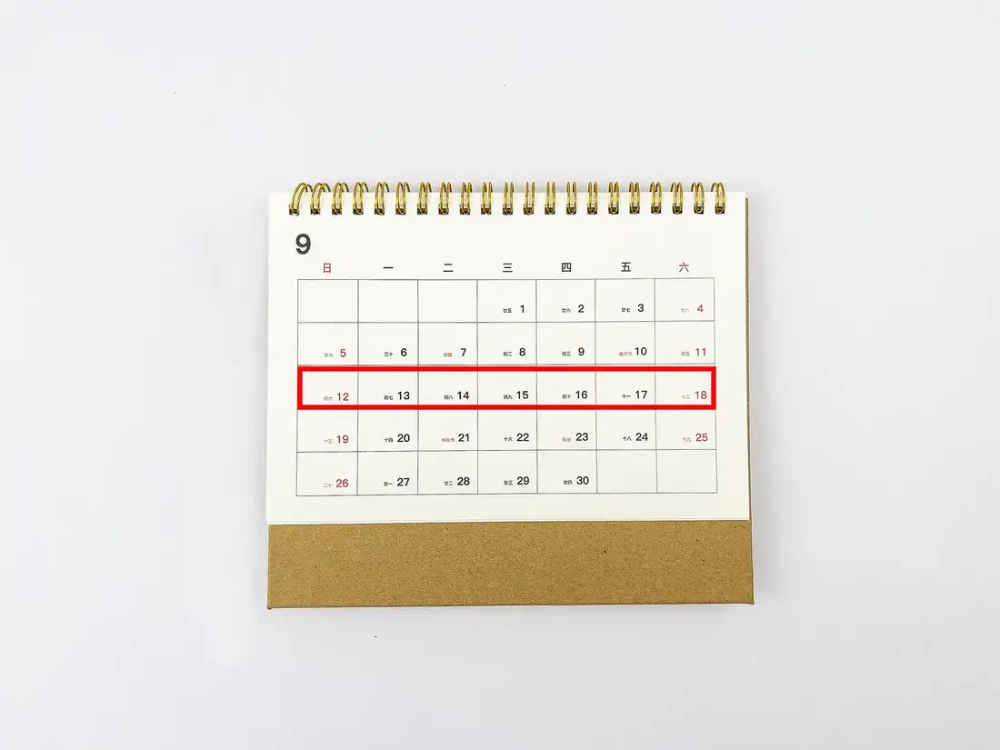

Giáo trình HSK 2 · Lesson 9我去买杯奶茶
Wǒ qù mǎi bēi nǎichá
Tôi đi mua một cốc trà sữa

Mục tiêu bài khóa
Sau bài học, người học có thể so sánh bằng 没有, diễn đạt khoảng cách với 离 và nói thời lượng của hành động.
用“没有”比较差异So sánh sự khác biệt bằng cấu trúc A 没有 B 那么／这么 + tính từ.
动词“离”的用法Dùng 离 để mô tả khoảng cách giữa hai địa điểm.
时量补语（1）Dùng bổ ngữ thời lượng để nói một hành động kéo dài bao lâu.
Khởi động · 热身
Chọn từ rồi chọn đúng hình ảnh tương ứng.
💡 Hãy chọn một từ trước.
Từ vựng · 生词
Mặt trước có từ, nghĩa, loại từ và nút phát/dừng. Mặt sau có hình ảnh và ví dụ theo PowerPoint.
坏
huài
xấu; tệ; hư; hỏng
tính từChạm vùng trống để lật thẻ

他不是一个坏人。 🔊Tā bú shì yí ge huàirén.
Anh ấy không phải người xấu. 这个手机坏了。 🔊Zhège shǒujī huài le.
Chiếc điện thoại này bị hỏng rồi. 旁边
pángbiān
bên cạnh; cạnh bên
danh từ chỉ phương vịChạm vùng trống để lật thẻ
医院旁边有家超市。 🔊Yīyuàn pángbiān yǒu jiā chāoshì.
Bên cạnh bệnh viện có một siêu thị. 上课的时候，我坐在他旁边。 🔊Shàngkè de shíhou, wǒ zuò zài tā pángbiān.
Khi học, tôi ngồi bên cạnh anh ấy. 男孩儿
nánháir
cậu bé; bé trai
danh từChạm vùng trống để lật thẻ
他是一个聪明的男孩儿。 🔊Tā shì yí ge cōngming de nánháir.
Cậu bé ấy rất thông minh. 这个男孩儿喜欢踢球。 🔊Zhège nánháir xǐhuan tī qiú.
Cậu bé này thích đá bóng. 这样
zhèyàng
như vậy; như thế này
đại từChạm vùng trống để lật thẻ
你这样做不对。 🔊Nǐ zhèyàng zuò bú duì.
Bạn làm như vậy không đúng. 我喜欢这样的天气。 🔊Wǒ xǐhuan zhèyàng de tiānqì.
Tôi thích thời tiết như thế này. 个子
gèzi
chiều cao; vóc dáng
danh từChạm vùng trống để lật thẻ

我的个子很高。 🔊Wǒ de gèzi hěn gāo.
Tôi có vóc dáng cao. 爸爸的个子很高。 🔊Bàba de gèzi hěn gāo.
Bố tôi rất cao. 那么
nàme
như thế; như vậy; đến vậy
đại từ / phó từChạm vùng trống để lật thẻ

他那么高。 🔊Tā nàme gāo.
Anh ấy cao đến vậy. 今天没有昨天那么热。 🔊Jīntiān méiyǒu zuótiān nàme rè.
Hôm nay không nóng bằng hôm qua. 高
gāo
cao
tính từChạm vùng trống để lật thẻ
他个子高，跑得也快。 🔊Tā gèzi gāo, pǎo de yě kuài.
Anh ấy cao, chạy cũng nhanh. 爸爸比我高很多。 🔊Bàba bǐ wǒ gāo hěn duō.
Bố cao hơn tôi rất nhiều. 门口
ménkǒu
cửa ra vào; cổng
danh từChạm vùng trống để lật thẻ

我们在门口见面吧。 🔊Wǒmen zài ménkǒu jiànmiàn ba.
Chúng ta gặp nhau ở cửa nhé. 学校门口有一棵树。 🔊Xuéxiào ménkǒu yǒu yì kē shù.
Trước cổng trường có một cái cây. 咖啡
kāfēi
cà phê
danh từChạm vùng trống để lật thẻ
他喜欢每天早上喝一杯咖啡。 🔊Tā xǐhuan měitiān zǎoshang hē yì bēi kāfēi.
Anh ấy thích uống một cốc cà phê mỗi sáng. 你喝不喝咖啡？ 🔊Nǐ hē bu hē kāfēi?
Bạn có uống cà phê không? 离
lí
cách; cách xa
động từChạm vùng trống để lật thẻ

请问，学校离这儿远吗？ 🔊Qǐngwèn, xuéxiào lí zhèr yuǎn ma?
Xin hỏi, trường học cách đây có xa không? 我们的教室离图书馆很近。 🔊Wǒmen de jiàoshì lí túshūguǎn hěn jìn.
Phòng học của chúng tôi ở rất gần thư viện. 近
jìn
gần
tính từChạm vùng trống để lật thẻ
公司离我家很近。 🔊Gōngsī lí wǒ jiā hěn jìn.
Công ty ở rất gần nhà tôi. 找个离这儿近的饭馆吧。 🔊Zhǎo ge lí zhèr jìn de fànguǎn ba.
Hãy tìm một quán ăn gần đây nhé. 走路
zǒulù
đi bộ
động từChạm vùng trống để lật thẻ
走路要半个小时，你坐车去吧。 🔊Zǒulù yào bàn ge xiǎoshí, nǐ zuò chē qù ba.
Đi bộ mất nửa tiếng, bạn đi xe nhé. 咱们一起走路上学吧。 🔊Zánmen yìqǐ zǒulù shàngxué ba.
Chúng ta cùng đi bộ đến trường nhé. 周
zhōu
tuần
danh từChạm vùng trống để lật thẻ

我一周上五天课。 🔊Wǒ yì zhōu shàng wǔ tiān kè.
Tôi học năm ngày mỗi tuần. 他每周都学习中文。 🔊Tā měi zhōu dōu xuéxí Zhōngwén.
Anh ấy học tiếng Trung mỗi tuần. Bài khóa · 课文
Ảnh ngữ cảnh bên trái, hội thoại bên phải. Bài khóa 4 trình bày đúng dạng đoạn nhật ký.
Tương tác đóng vai
Chọn bài khóa và nhân vật. Lời của vai đã chọn sẽ được ẩn; phần này chỉ hiển thị chữ Hán.
Củng cố từ vựng
Lật đáp án từ vựng rồi hoàn thành câu hỏi đọc hiểu.
Câu hỏi đọc hiểu
Mẫu câu cần nhớ: 楼下站着一个人。她经常跑上来找我玩。我去买杯奶茶！